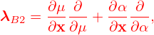
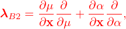

Next, we define the guiding-center transform and then transform the Vlasov equation from the particle coordinates (x,v) to the guiding-center coordinates, i.e., express the gradient operators ∂∕∂x and ∂∕∂v in terms of the guiding-center coordinates.
In a magnetic field, given a particle location and velocity (x,v), we know how to calculate its guiding-center location X, i.e.,
|
| (27) |
where e∥ = B0∕B0, Ω = qB0∕m, B0 = B0(x) is the equilibrium (macroscopic) magnetic field at the particle position. We will consider Eq. (27) as a transform and call it guiding-center transform[1]. Note that the transform (27) involves both position and velocity of particles.
Given (x,v), it is straightforward to obtain X by using Eq. (27). On the other hand, the inverse transform (i.e., given (X,v), to find x) is in principle not easy because Ω and e∥ depend on x, which usually requires solving a nonlinear equation for the root . Numerically, one can use
 | (28) |
as an iteration scheme to compute x, with the initial guess chosen as x0 = X. If we stop at the first iteration, then
 | (29) |
In gyrokinetic PIC simulation, Eq. (29) is used as the inverse guiding-center transformation. This transformation needs to be performed numerically when we deposit markers to grids or when we calculate the gyro-averaged field to be used in pushing guiding-centers.
For later use, define ρ ≡−v × e∥∕Ω, which is the vector gyro-radius pointing from the the guiding-center to the particle position.
[The equilibrium magnetic field we will consider has spatial scale length much larger than the thermal gyro radius ρ. In this case the difference between the values of e∥(x)∕Ω(x) and e∥(X)∕Ω(X) is negligible. The difference between equilibrium field values evaluated at X and x is usually neglected in gyrokinetic theory (except in deriving the gradient/curvature drift). Therefore it does not matter whether the above e∥∕Ω is evaluated at x or X. What matters is where the perturbed fields are evaluated: at x or at X. The values of perturbed fields at x or at X are different and this is called the finite Larmor radius (FLR) effect.]
The guiding-center transformations (27) and (29) involve the particle velocity v. It is the cross product between v and e∥(x) or e∥(X) that is actually used. Therefore, only the perpendicular velocity (which is defined by v⊥ = v − v ⋅ e∥) enters the transform. A natural choice of coordinates for the perpendicular velocity is (v⊥,α), where v⊥ = |v⊥| and α is the azimuthal angle of the perpendicular velocity in the local perpendicular plane.
The parallel direction is fully determined by B0(x), but there are degrees of freedom in choosing one of the two perpendicular basis vectors. In order to make the azimuthal angle α fully defined, we need to choose a way to define one of the two perpendicular directions. In GEM simulations, one of the perpendicular direction is chosen as the direction perpendicular to the magnetic surface, which is fully determined at each spatial point. (We need to define the perpendicular direction at each spatial location to make ∂α∕∂x|v defined, which is needed in the Vlasov differential operators. However, it seems that terms related to ∂α∕∂x|v are finally dropped due to that they are of higher order**check.)
In the following, α will be called the “gyro-angle” . [Note that, in the guiding-center coordinates (X,v∥,v⊥,α), α is a velocity coordinate rather than a spatial coordinate. When transformed back to particle coordinates, α affects both the velocity coordinate and the spatial coordinate. Consider a series of points in terms of guiding-center coordinates (X,v∥,v⊥,α) with (X,v∥,v⊥) fixed but with α changing. Using the inverse guiding-center transform (29), we know that the above points form a gyro-ring in space, i.e., α influences spatial location, in addtion to velocity.]
The gyro-angle is an important variable we will stick to because we need to directly perform averaging over this variable (with X fixed) in deriving the gyrokinetic equation. We have multiple options for the remaining velocity coordinates , such as (v,v∥), or (v,v⊥), or (v∥,v⊥). In Frieman-Chen’s paper, the velocity coordinates other than α are chosen to be (𝜀,μ) defined by
 | (30) |
and
 | (31) |
where Φ0(x) is the equilibrium (macroscopic) electrical potential. Choosing μ as one of the phase space coordinates is nontrivial because it turns out a constant of motion. And this choice seems to be important in sucessfully getting the final gyrokinetic equation (I need to check this).
Note that (𝜀,μ,α) is not sufficient in uniquely determining a velocity vector. An additional parameter σ = sign(v∥) is needed to determine the sign of v∥ = v ⋅e∥. In the following, the dependence of the distribution function on σ is often not explicitly shown in the variable list (i.e., σ is hidden/suppressed), which, however, does not mean that the distribution function is independent of σ.
Another frequently used velocity coordinates are (μ,v∥,α). In the following, I will derive the gyrokinetic equation in (𝜀,μ,α) coordinates. After that, I transform it to (μ,v∥,α) coordinates.
One important thing to note about the above velocity coordinates is that they are defined relative to the local magnetic field. If the field itself is spatially varying (such as in tokamaks), the above velocity coordinates are also spatially varying for a fixed velocity v. Specifically, the following derivatives are nonzero:
 | (32) |
The transform from particle variables (x,v) to guiding-center variables (X,𝜀,μ,α,σ) is given by
 | (33) |
As mentioned above, the dependence of the distribution function on σ will not be explicitly indicated in the following.
Denote the particle distribution function expressed in particle coordinates (x,v) by fp, and the same distribution expressed in the guiding-center variables (X,𝜀,μ,α) by fg. Then
 | (34) |
where (x,v) and (X,𝜀,μ,α) are related to each other by the guiding-center transform (29). Equation (34) along the guiding-center transform can be considered as the definition of fg.
As is conventionally adopted in multi-variables calculus, both fp and fg are often denoted by the same symbol, say f. Which set of independent variables are actually assumed is inferred from the context. This is one subtle thing for gyrokinetic theory in particular and for multi-variables calculus in general. (Sometimes, it may be better to use subscript notation on f to identify which coordinates are assumed. One example where this distinguishing is important is encountered when we try to express the diamagnetic flow in terms of fg, which is discussed in Appendix G.)
In practice, fg is often called the guiding-center distribution function whereas fp is called the particle distribution function. However, they are actually the same distribution function expressed in different variables. The name “guiding-center distribution function” is misleading because it may imply that we can count the number of guiding-centers to obtain this distribution function but this implication is wrong.
Using the chain-rule, the spatial gradient ∂fp∕∂x is written
 | (35) |
From the definition of X, Eq. (27), we obtain
 | (36) |
where I is the unit dyad. From the definition of 𝜀, we obtain
 | (37) |
where E0 = −∂Φ0∕∂x. Using the above results, equation (35) is written as
![∂f ∂f [ ∂ (e ) ] ∂f q ∂f ∂μ ∂f ∂α∂f
--p |v = --g+ v × --- -∥ ⋅--g − --E0--g + -----g+ ----g .
∂x ∂X ∂x Ω ∂X m ∂𝜀 ∂x ∂μ ∂x ∂α](nonlinear_gyrokinetic_equation41x.png) | (38) |
As mentioned above, the partial derivative ∂∕∂x is taken by holding v constant. Since B0 is
spatially varying, v⊥ is spatially varying when holding v constant. Therefore  and  are
generally nonzero. The explicit expressions of these two derivatives are needed later in the
derivation of the gyrokinetic equation and is discussed in Appendix J. For notation ease,
define
and  are
generally nonzero. The explicit expressions of these two derivatives are needed later in the
derivation of the gyrokinetic equation and is discussed in Appendix J. For notation ease,
define
|
| (39) |
and
|
| (40) |
then expression (38) is written as
|
| (41) |
Note that ∂∕∂X is a shorthand for
| |𝜀,μ,α |
i.e., it is taken by holding (𝜀,μ,α) constant (rather than holding v constant). For notation ease, ∂∕∂X is sometimes denoted by ∇X or simply ∇.
Next, let us express the velocity gradient ∂f∕∂v in terms of the guiding-center variables. Using the chain rule, ∂f∕∂v is written
|
| (42) |
From the definition of X, we obtain

 | (44) |
From the definition of μ, we obtain
 | (45) |
From the definition of α, we obtain
 | (46) |
where eα is defined by
 | (47) |
Using the above results, expression (42) is written
 | (48) |
In terms of the guiding-center variables, the time partial derivative ∂fp∕∂t appearing in Vlasov equation is written as
 | (49) |
where V = (𝜀,μ,α). Here ∂X∕∂t and ∂V∕∂t are not necessarily zero because the equilibrium quantities involved in the definition of the guiding-center transformation are in general time dependent. This time dependence is assumed to be very slow in the gyrokinetic ordering discussed later. In the following, ∂X∕∂t and ∂V∕∂t will be dropped, i.e.,
 | (50) |
Using the above results, the Vlasov equation in guiding-center coordinates is written
Using tensor identity a ⋅ I × b = a × b, equation (51) is written as This is the Vlasov equation in guiding-center coordinates.![[ ]
∂fg ∂fg -q ∂fg
∂t + v ⋅ ∂X + [λB1 + λB2]fg − m E0 ∂𝜀
q ( I× e ∂f ∂f v ∂f e ∂f )
+ --(E+ v × B) ⋅ ----∥-⋅--g + v--g + -⊥---g+ -α---g
m Ω ∂X ∂ 𝜀 B0 ∂μ v⊥ ∂α
= 0 (51)](nonlinear_gyrokinetic_equation57x.png)
![[ ]
∂fg+ v ⋅ ∂fg+ [λ + λ ]f − q-E ∂fg
∂t ∂X B1 B2 g m 0 ∂𝜀
q- ( e∥) ∂fg -q ( eα∂fg)
+ m(E + v × B)× Ω ⋅∂X + m (v× B )⋅ v⊥ ∂α
q ( ∂f v ∂f e ∂f )
+ -E ⋅ v--g + -⊥---g+ --α--g
m ∂𝜀 B0 ∂μ v⊥ ∂ α
= 0, (52)](nonlinear_gyrokinetic_equation58x.png)